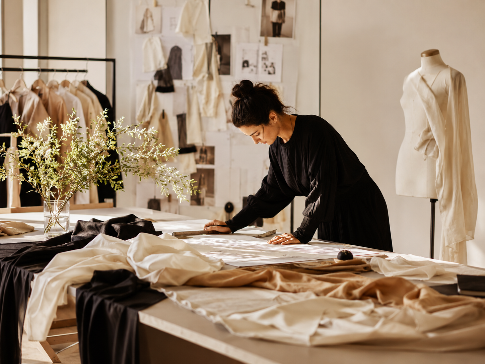

Quality
We work only with mills and ateliers that share our standards for materials and craftsmanship. Every garment is inspected before it leaves the factory.
BRANDED is an independent fashion label built on three quiet beliefs: good materials, considered design, and clothes that last longer than a season.

BRANDED started in 2024 as a small studio project between two designers who were tired of clothes that looked good in a shop and fell apart six months later. The first collection was twelve pieces, made in Portugal, and sold to friends and friends of friends.
The studio has grown since then, but the rules are the same: small production runs, mills we know by name, and no shortcuts on fabric or construction. We would rather make fewer things well than many things quickly.
Every piece is designed in Vilnius and produced across independent factories in Europe. Each label carries the country of manufacture and a fabric breakdown — nothing is hidden.
We work only with mills and ateliers that share our standards for materials and craftsmanship. Every garment is inspected before it leaves the factory.
Small production runs, deadstock fabrics where possible, and honest labelling of every component. We measure waste at every step.
Modern silhouettes built on enduring patterns. Each shape is refined across multiple samples before a single metre of fabric is cut for production.